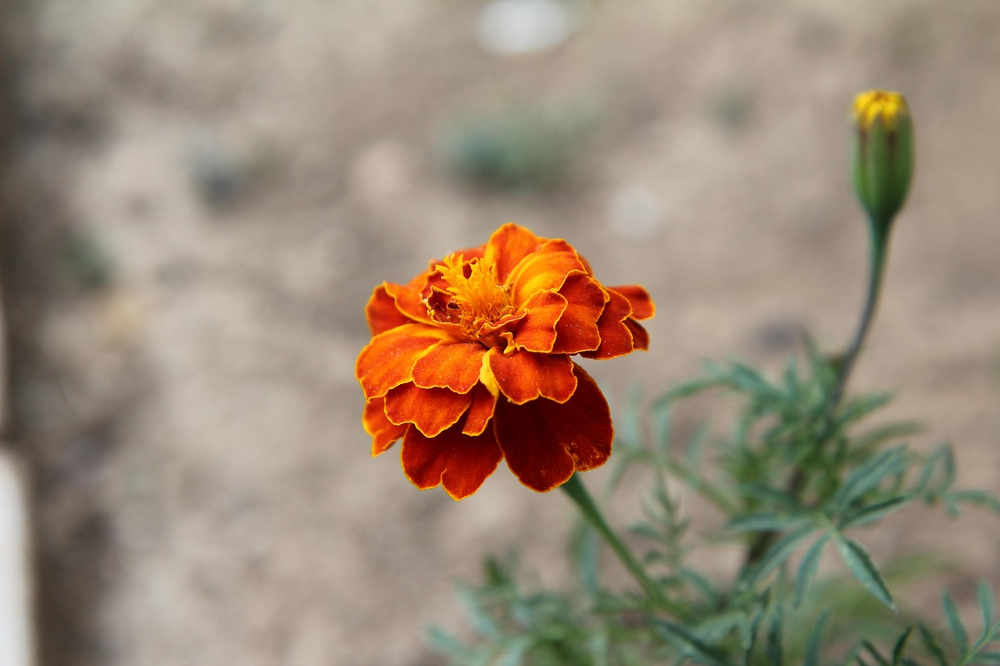
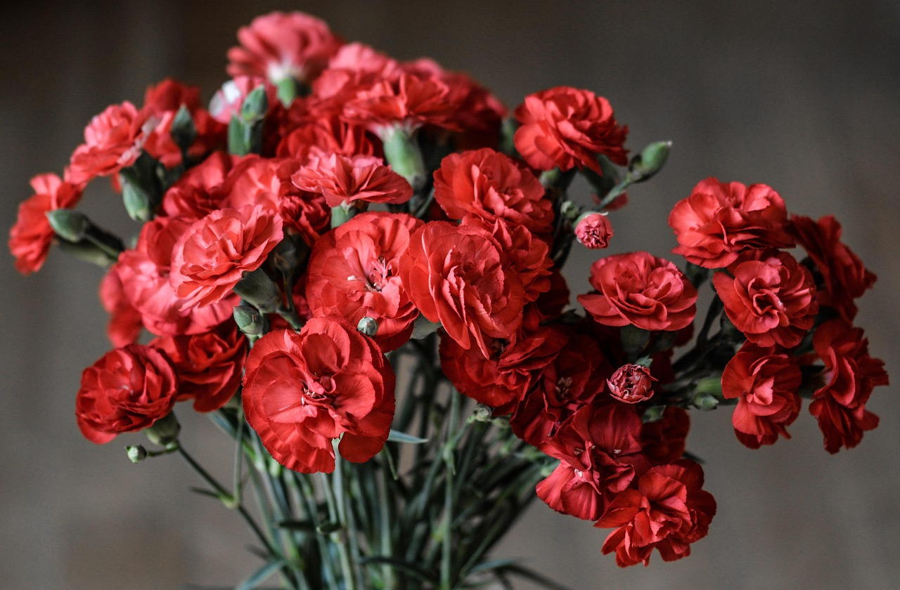

🌷 康乃馨 母亲节之花
Dianthus caryophyllus - 母爱与温馨的象征



📋 基本信息
学名：
Dianthus caryophyllus
科属：
石竹科石竹属
原产地：
地中海地区
花期：
5-8月（盛花期5-6月）
花语：
母爱、温馨、祝福、纯洁的爱
株高：
30-70厘米
🎨 主要品种
红康乃馨
热烈的母爱
代表：红色康乃馨粉康乃馨
年轻的母爱
代表：粉色康乃馨白康乃馨
纯洁的母爱
代表：白色康乃馨黄康乃馨
感激与友谊
代表：黄色康乃馨🌱 养护要点
☀️ 光照：
喜阳光充足，每天6-8小时
💧 浇水：
保持土壤微湿，忌积水
🌿 土壤：
疏松肥沃的微碱性土壤
🌡️ 温度：
适宜15-25°C，忌高温高湿
🍃 施肥：
生长期每2周施一次液肥
✂️ 修剪：
花后及时摘心，促进分枝
💡 专业养护技巧
• 夏季高温时适当遮阴，防止日灼
• 浇水时避免淋湿叶片，预防病害
• 及时摘除残花，延长花期
• 冬季减少浇水，保持盆土稍干
🌷 康乃馨特色养护
• 康乃馨为多年生草本，可多年栽培
• 枝条脆嫩，需防倒伏和折断
• 花后修剪可促进第二次开花
• 适当控水可延长切花寿命
🍂 季节养护指南
🌸 春季（3-5月）
• 换盆分株
• 施催芽肥
• 适当摘心
• 预防虫害
☀️ 夏季（6-8月）
• 花期管理
• 适当遮阴
• 花后修剪
• 防治病害
🍁 秋季（9-11月）
• 修剪整形
• 施越冬肥
• 减少浇水
• 准备越冬
❄️ 冬季（12-2月）
• 防寒保温
• 控制浇水
• 检查虫害
• 室内养护
🐛 常见病虫害防治
立枯病：
茎基部腐烂，改善通风，喷洒多菌灵
锈病：
叶片有锈斑，剪除病叶，喷洒粉锈宁
蚜虫：
危害嫩芽，喷洒吡虫啉
红蜘蛛：
叶片有黄斑，增加湿度，喷洒杀螨剂
🌿 繁殖方法
扦插繁殖：
主要繁殖方式，春秋季扦插
播种繁殖：
用于新品种培育
分株繁殖：
多年生植株可分株
组织培养：
大规模生产常用方法
📚 文化意义
康乃馨是母亲节的象征花卉，代表着母爱、温馨和祝福：
母亲节之花：
1907年成为母亲节官方花卉
母爱象征：
红色康乃馨象征热烈的母爱
祝福之花：
送给母亲表达感恩和祝福
纯洁之爱：
白色康乃馨象征纯洁的爱
💝 康乃馨与节日
• 母亲节：红色和粉色康乃馨最受欢迎
• 教师节：表达对老师的尊敬和感激
• 妇女节：送给女性的祝福之花
• 结婚纪念日：象征持久的爱情
💐 切花养护技巧
选择花朵：
选择花苞半开，花色鲜艳
处理花茎：
斜切花茎，去除下部叶片
水质要求：
使用干净的水，添加保鲜剂
摆放位置：
避免阳光直射和空调风口
🎁 节日搭配建议
母亲节：
红康乃馨+满天星+绿叶
教师节：
粉康乃馨+百合+文竹
生日祝福：
多彩康乃馨+玫瑰+尤加利
探病慰问：
白康乃馨+黄莺+勿忘我
🌿 药用价值
舒肝解郁：
花蕾可泡茶，缓解情绪紧张
美容养颜：
含有丰富维生素，促进皮肤健康
清热解毒：
花茶可清热，缓解咽喉不适
调节内分泌：
对女性内分泌有一定调节作用
💮 颜色象征意义
红色：
热烈的爱，对母亲的崇敬
粉色：
年轻美丽，永远年轻的母爱
白色：
纯洁的爱，对母亲的思念
黄色：
感激之情，对母亲的感谢